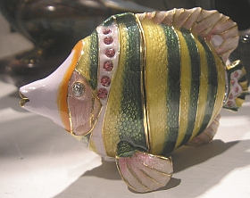

Jim Terr occupies
a unique place in citizen activism.
In both his brilliant satire work, and his more serious essays and
outreach,
he has a peculiar gift for focusing on the people who need to be
reached
and who might be reached, instead of just “preaching to the
converted.”
His is a unique and valuable gift
of populism and simplicity,
perhaps a result of his small-town upbringing.
His work is wise, hard-hitting, unusually effective, and deserves the
support
of everyone who wishes for a more humane world.
Especially in these particularly divisive times,
Jim has a gift for bridging the “divide.”
-- Thom
Hartmann, radio host and author
NICE ARTICLE ABOUT THIS IN LOCAL E-NEWSLETTER, 9-6-16
Las Vegas, NM has been the
locale for so many films and
TV shows for decades that some degree of
“jadedness” has reportedly set in among residents
asked to participate as background “extras” and in
other ways.
But local video producer Jim
Terr reports no lack of
support for his feature-length film, “A Chicken in
Every Garage,” currently nearing completion with
the recent shooting of the opening scene at Charlie’s
Bakery.
The film title is a melding of
two famous Depression
era slogans, “A Chicken in Every Pot” and “A Car in
Every Garage.” The film is based on Terr’s run in the
US Presidential Pre-Primary in Arizona in 2012. (Terr
reports that he got 59 votes, “not the worst showing of
all the candidates”), and that he participated mainly with
the making of the current film in mind.
The film has evolved to
include themes of mystery,
psychology, and much music -- including by local
performers – and also includes many local scenes
and scenery. Terr currently has a campaign
on www.GoFundMe.com
for completion funding –
urgent, he says, since the movie pokes fun at Donald
Trump and needs to be released before the November 8
election. The film also includes elements of his
“Romaine Fielding at the Plaza Hotel” series of stories
and videos, featured at www.TentaclesFilm.com
.
The opening scene shot at Charlie’s
Spic N Span
starred Santa Fe film union head Jon Hendry as a
psychiatrist speaking to a local civic club about the
story’s main character, who has been in a coma for
years but with very full brain activity, perhaps
imaginary and perhaps based on real experience.
Hendry also donated t-shirts commemorating Las
Vegas’ 100 years of film history, as premiums for
those participating in the project.
Terr friend and associate Gerald
Fried of Santa Fe,
composer of hundreds of Emmy-winning and Oscar-nominated
movie and TV scores including “Roots”
and “Star Trek,” has offered the use of some of his
film music for the project, which Terr says is not
only an honor but a great budget help as well.
Terr has produced over a thousand
videos which
have gained over 1.5 million views on www.YouTube.com
, including several promoting
Las Vegas with tens of thousands of views.
Over 2.5 million views on our YouTube
channel -
and many more views on new videos posted on Facebook
Op-ed published in several papers / sites November, 2016:
Coming to terms with
President Trump
Now that the unthinkable (for me and most of my friends, and the
pundits) has happened, and after the initial shock, I am seeking
a few things to be hopeful about in a Trump presidency.
First, I remind myself that before he became a Republican and
Christian and Conservative a few months ago, he was just a
playboy Democrat man-about-town businessman. Evidently not a
great one, judging from his bankruptcy record and presumably
from his never-to-be-revealed tax returns, but a guy who
hopefully prefers that he and his buildings survive,
above-sea-level, in a world of clean air, water and
livable climate.
So I assume that two-thirds of his bluster and his positions
were just that, and that he will find a way to walk back much of
his pro-gun, anti-abortion, jail-Hillary, anti-immigrant,
pro-right-wing-Supreme-Court rhetoric and be forgiven his
inconsistency, as he has been so far, by his Faithful. And
I assume he wouldn’t like his family (or himself) to become
victims of gun nuts and vigilantes.
Second, he’s a self-proclaimed know-it-all, so when he’s
confronted with other powerful egos in the GOP establishment I
fully expect him to say, eventually, “To Hell with you all,” and
do his own thing.
I am looking forward to him having the same experience Barry
Goldwater had, when he said in 1994,“Mark
my word, if and when these preachers get control of the
[Republican] party, and they're sure trying to do so, it's
going to be a terrible damn problem. Frankly, these people
frighten me. Politics and governing demand compromise. But
these Christians believe they are acting in the name of God,
so they can't and won't compromise. I know, I've tried to
deal with them.”
Third, he’s got a family – children
and grandchildren – and would presumably like to see them
survive and have a good life in a better world. He’s got a
wife and daughter he reportedly relies on who are evidently
more sensible and gracious than he is. I assume he’d like to
make some truly “smart moves” and leave a good legacy, to
the best of his ability and that of his advisors.
One of them, Chris Christie, though hated by good Democrats,
won my admiration long ago in a fiery speech defending
his Muslim New Jersey State Supreme Court nominee from the
prevailing “ignorance” (as he called it), and if appointed
to head the Justice Department, I have faith in his fairness
as well as his intelligence.
Fourth, being in the driver’s seat has got to be a sobering
experience. The b.s. and electioneering are over, and his
extra-long meeting with President Obama tells me he’s
probably serious and humbled (if a guy like that could ever
be humbled) by the task before him.
I’m hoping that one term as president will be more than
enough for him, more than enough on his résumé, and that
he’ll be anxious to move on soon. In fact some are
predicting he’ll probably take long, George-Bush-like
vacations and leave his VP mostly in charge. (Whether that’s
good or bad is another discussion). So I’m hoping he won’t
need to keep up the inflammatory and pandering rhetoric for
the sake of re-election, because I’m hoping he won’t want
it.
I will never forgive or understand those who voted for him,
for letting him get away with the secret tax returns, the
denials of half the things he said and did, and, mostly, for
not repudiating his white supremacist supporters. And I
can’t imagine I would like the guy if I ever met him, but I
don’t expect to ever meet him. I’m hoping he’s not as
vindictive as he has sounded and has encouraged his
followers to be, partly because I have made my own
anti-Trump views have been very public, and am known to his
attorneys.
His sons scare me to death, reminiscent of Saddam sons Uday
and Qusay for some reason, but that’s just an impression –
maybe in fact they’re great and fair humanitarians.
Time will tell; I will try to be hopeful that President
Trump will not upend our world, and will rely on some people
experienced in government, and in give-and-take, to do more
good than harm.
Just for the record: A recent
experience with medical costs Jim
Terr - Las Vegas (NM) Optic, 5-1-16
http://www.lasvegasoptic.com/content/just-record-recent-experience-medical-costs
We can’t all seem to agree about much lately, but perhaps we
can all agree that in order to address a problem we have to
have some accurate information, even if just one person’s
experience.
So, assuming we agree we do have a problem with
medical costs and coverage (including the specter of going
bankrupt from medical costs if not insurance costs), I’d
like to share a recent experience with surgery and
hospitalization:
A few months ago, in the course of a general check-up, my
physician told me that my “outie” belly button is the start
of a hernia which, if it ever really popped out, would be a
serious medical problem. His advice was that if I could
afford it, I should get it reinforced by mesh.
I could finally afford it with my new medical insurance,
Blue Cross, purchased through the “Marketplace” (ACA –
“Obamacare”) a few months later, so I proceeded. The surgeon
who was recommended to me said exactly what my doctor told
me – that it was not an urgent procedure but a choice to
prevent something serious that might or might not happen in
the future.
So, having determined that all costs related to the
procedure would be covered, I got the surgery in late
December of 2015, in Albuquerque. I was discharged
almost immediately, a little too soon, according to some,
and sure enough I was taken to the emergency room here in
Las Vegas a couple days later, with a couple of painful
complications.
I was diagnosed, X-rayed, treated a bit, opiated, and taken
by midnight ambulance back to Albuquerque, to the hospital
which had hosted the surgery. I was there for a couple scary
days before limping out and back to Las Vegas for several
weeks’ very slow and uncomfortable recovery – which by the
way is what the surgeon had promised me in the first place.
My point, though, is the costs, summarized here and rounded
off, and excluding those under $1,000, and figuring out
what’s what as best I can from all the billing names that
give no indication of what they are:
Now, getting into the realm of the surreal, in my opinion:
• Emergency room in Las Vegas, approximately five hours:
$21,300
• Emergency room physician (no surgery or anything
dramatic): $1,700
• Ambulance ride to Albuquerque: $1,700
• Now, getting even more surreal, two days in Lovelace
Hospital in Albuquerque; nothing dramatic, no surgery or
“procedures”: $87,500. (That’s right, $44,000 per day!)
Total for this adventure: $125,500, figured conservatively.
Was it “worth it”? Well, it’s nice to have had the repair,
but only if I were the successful mega-movie-producer I hope
to be could I have afforded it myself, at those prices. Was
it worth that much to “society” – us – “The Government,” who
paid for it? I doubt it.
Why were the prices so ridiculously high? My understanding
is that it’s primarily to cover the costs of those who don’t
pay, due to being uninsured. No wonder Blue Cross had to
leave the “Marketplace!”
How does every other industrialized society manage to have
good-to-excellent medical care covered by a “single-payer”
system for everyone (ask people from those countries how
good the medical care is or isn’t; don’t ask Rush Limbaugh
et al)? An incredible mystery! It could have something to do
with their lack of for-profit “healthcare” outfits, headed
by CEOs making tens or hundreds of millions of dollars a
year.
A comparison:
Let’s compare the above to the experience of a local
physician who shattered his elbow in a bicycle accident in
Spain this past year. He was transported by ambulance to
urgent care, then to hospital, given X-rays, a complicated
four-hour surgery by a team of 10 people he (a
physician) judged to be excellent, pinned and wired back
together, and kept in hospital for three days of IV
antibiotics due to the nature of the open contaminated
fracture into the joint.
He was billed a total of $5,000, perhaps because he was not
an EU citizen paying into the system. The cost here in the
U.S. would have been at least what my total bill was, over
$100,000!
Call that “Socialist,” call it “Herman,” as my doctor dad
used to say, but this remains the only country with a
million people or more declaring bankruptcy every year due
to medical bills, and millions staying in jobs they’d rather
not in order to have health insurance.
The solution won’t come with Bernie Sanders or anyone else
being elected, in my opinion, but by our facing the problem
and the possibilities. And perhaps the solution for the
problems with our local, formerly “community owned” hospital
lies in the same direction.
Jim Terr is a singer/songwriter, documentary and film
producer and satirist raised in Las Vegas, N.M.
12 nerve-rackingly side-splitting songs, most of them
never before released on CD! (though some are from popular YouTube videos)*
SIMPLIFIED ORDER PROCEDURE,
via Pay Pal / credit / debit card:
One CD, shipped first class (USA): $15.00
Two CDs shipped first class to one address (USA): $25.00
$10.00 each additional CD to same address Click
here- and include your order info. As noted above, $1.50 per CD goes to Doctors
without Borders
NOTE: CD front and back are not shown in
actual printing quality.
Those will be provided for paid downloads. "Physical" CDs
ordered
may have back cover printed in black and white, not color as
shown.
NEW --
AUDIO READINGS: JT reads Tobias Wolff's "Bullet
in the Brain" (5 mb, 12 min.) (PG
rated for 2 bad words)
JT reads Davey
Crockett "Thunderbolt"
story ( 2.5 min.)
Introducing
our new Advisory Panel
We admit our mistakes and failings in the 70s, 80s
and 90s, and commit to a bold and total re-tooling,
re-visioning, a forward-looking future. Join us!
"What a powerful president. In
office just one day and he already has his wife's picture on
the dollar bill." -Johnny
Carson, on the night of Bush Sr's inauguration
WIND
ENERGY Tiny
Turbines May Have a Bright Future They are small and look more like art than innovation.
But the mini-windmills built by a British company could soon be
on roofs across Europe and the US -- if German energy giant RWE
has its way. more...
"Jim Terr's YouTube
videos topped 100,000
views in 2008 [now over one
million ], so why
shouldn't he self-celebrate? Ego and genius self-perpetuate. You
gotta hand it to Jim. If there's a reason to whip out a camera,
a subject out there to be shot, Jim's been there, going there or
there right now. Or sitting at home manipulating stock footage
into some rudimentary animation. And when there ain't nothing
else to do, hell, he'll just write a song and film himself
playing it. I tease and needle, because that's the vital role he
plays in Americana."
- Artistic
Overdose
JimTerr.com Alternate
pronunciation:
Referral
website for
Jim Terr projects
Thanks for dropping by. See belowfor various websites.
Greetings from Santa Fe, New
Mexico, USA!
Blue
Canyon Productions is a vehicle for various entertainment and media
projects produced by Jim Terr -- a New Mexico native who is
an occasional commentator in local and national media, an
actor, singer-songwriter, video producer & author.
"In
his letters and articles, Jim Terr makes too much sense. In
any other country he would have long since been locked up." - Jonathan
Alter,
Senior Editor, Newsweek
"Jim
Terr's spirit shows through consistently in the essays, songs
and other projects he creates. It's the droll, sardonic, 'cut
the B.S.' outlook that is known around the world as
'American.' His tone is especially valuable in an election
year." - James
Fallows
JIM TERR:
"A gentle agitator...who's come up with a way to lower
the country's political temperature."
-Paul Greenberg,
syndicated columnist
(These quotes do not indicate support of
any or all Jim Terr projects or pronouncements)
“I am totally satisfied with your first class
approach to my video project.”
--Matt Kuhn
(Matt
KuhnCollection).
JT,
"sleeper"
star
film maker?
"Production value and budget always counts less than a
great "script" If I had money for a flutter on one
NM filmmaker (or disposable income for a speculative
investment ) then Jim's my guy."
--Jon Hendry,
IATSE
"Jim Terr’s creativity and versatility are unmatched. Well,
almost unmatched."
- Hodding
Carter
"One of the true creative geniuses of our time.
...This guy does some of the best satire in the business.
One of the great comedic and auditory geniuses of our day."
- Thom
Hartmann
"A highly creative, satirical Outlander and asskicking
comedian without parallel; an excellent writer...reminds me of
Calvin Trillin...Jim Terr has too damn many websites"
-Mike Malloy
(Performance preview): It’s not often that an
artist who recognizes himself gets recognized. Wild and
reckless Jim Terr knocks ’em dead with his original
one-man, beer-spitting, lady-killing,
Brechtian-obfuscationist performance-art masterpieces that
shock grandparents everywhere. (Santa Fe Reporter
1-30-08)
Ninja
Boy learns at an early age
to disappear into the background
Enjoy thistrailer
of a favorite film, "Small Time Crooks," starring
Woody Allen & Tracey Ullman

Just a nice shot I got -- of Russian porcelain.
Filming the State
Santa
Fe Filmmaker Will Produce Radio Drama
By
Emily Esterson, 11-28-06
Is
the film industry really as good as it seems in New Mexico?
With announcements of Steven
Seagal movies being shot downtown (today's Albuquerque
Journal), and the Department of Labor saying the information
sector's improvement in job growth is partly due to the film
industry, nary a negative word can be spoken. And hey, it's
pretty fun.
Local
filmmaker Jim Terr has been a tenacious, if sometimes strange,
force in the locally-grown entertainment media market. Now Jim
reports that one of his short films - the one he says is his
best - will be produced as a two-hour radio drama for local
and national broadcast on KUNM, Albuquerque's NPR affiliate,
in the summer of 2007. Casting sessions were held last week,
bringing in over 100 actors to auditions in Santa Fe and
Albuquerque. "The Home of Katie Archer" has a familiar
ring; it started life as a story about an actor struggling to
make it as a full-time carpenter and part-time actor in a
small New Mexico town visited often by Hollywood movies and
settled by Hollywood actors.
It
has since morphed into a larger tale with a historical back
story. Terr writes on his website
that he's already spoken to several "well-known celebrities"
about cameo voices in his radio play. He's also hoping to
produce the script as a full-length feature film. [see project website ]
"The Seventeen
Traditions" - BEAUTIFUL talk about how
his parents equipped and inspired him to be an activist,
inadvertently or otherwise, by Ralph Nader. Whatever you
think about Ralph's presidential runs, this isn't about
that. Very funny, thoughtful and rich. Explores how
people gain a "civic sense," and why so many think
that's so unusual. AUDIO 45 minutes: Real 28
(7MB)
MP3
(42MB) Taken from this
video, regarding
this book
HUGGING IS NOT A CRIME
Marisa Crockett talks to an Albuquerque police officer at the
University of New Mexico on Tuesday about her "free hugs"
project. Crockett, a Canadian, is traveling across the United
States in her bio-fueled car. She offers hugs to attract
people so she can talk to them and get the word out about her
recycling program. The officer was responding to a complaint
about her offering hugs but left after discussing with her
what she was doing. Shaminder Dulai Albuquerque
Journal
I use some
more than others (like only once, in some cases), but I was
just going through my "favorites" and selected a few that some
of my eclectic friends might find useful. In addition to
Wikipedia, etc., of course.
Santa Fe,
NM documentary and short-film maker Jim Terr has racked up
over 100,000 views of his videos on YouTube.com,
and has posted a video called "A
Hundred Thousand YouTube Views" to tout that
accomplishment.
While
there are individual videos on YouTube which have gained
millions of views, Terr
is proud to have built his viewership by posting a wide
variety of videos -- 62 to date -- beginning 16 months ago
with a video called "Santa
Fe Stops," showing vehicles speeding through a
Santa Fe stop sign.
Terr
videos produced as far back as 1992
are included on his YouTube "channel."
The "Hundred
Thousand" video features a hot boogie-woogie piano
background track by former Santa Fe resident Clay
Cotton, now stricken with Multiple Sclerosis. Terr
hopes that exposure of the new video will increase CD sales
for Cotton, and says he never tired of Cotton's
piano playing in the hundreds of times he heard it
while editing. "In fact, it got better and better."
37 of
Terr's shorts - including previews of two forthcoming videos
-- are excerpted for the "Hundred Thousand"
collection, ranging from actor and comedy sketches,
political satire and commentary, crafts and trades,
documentary excerpts, proposed feature film "trailers,"
advertising parodies, local cultural events and restaurant
visits, interviews, live performance excerpts and musician
portraits.
Little
sound was included on the music clips excerpted in the new
video, however, due to clashes with the background piano
track. In fact, Terr's most-viewed video, "One
Year Old Child Prodigy Piano Genius" , with over
50,000 views, was not even included in the new collection.
Such
celebrities as authors Tony Hillerman and Douglas Preston,
humorist Dave Barry, actor Kevin Pollak and NPR broadcaster
Scott Simon are included in the videos, as well as stills of
and references to President Bush, Valerie Plame Wilson and
others.
In the
latter piece , Terr admits that the production of short
videos has gotten to be a bit of an obsession, but he
credits and thanks YouTube for making it so easy for
videomakers to post and to find videos. Terr has mostly not taken advantage of other
video-posting sites thus far.
He has also posted the Santa Fe-related videos on his own www.SantaFeShorts.com
site, which links to the YouTube videos.
# # #
NOW THAT I'M 64
Parody lyrics and vocal by Jim Terr www.JimTerr.com
…(McCartney's) awareness of aging and loss as he
approaches his sixty-fourth birthday…a milestone that he
admits he finds difficult to contemplate. "The thought is
somewhat horrifying… It's like 'Well, no, this can't be
me."
-"When
I'm Sixty-Four: Paul McCartney then and now." New Yorker,
June 4, 2007)
Now that
I'm older, I still got me hair,
But there's still things 'bout which,
If I were sufficiently a pessimist,
I might still be willing to bitch.
Sittin and
standin', movin' me bowels,
Trying to unlock the damn door.
Life is a more static, less automatic,
Now that I'm 64.
It's only
the new 54, that's what they say,
But that's a load of bull and it's hard to take.
And no doubt when I am 85,
I'll know me attitude was a mistake. -But meanwhile…
Send me
postcard telling me please,
Where I left that note
Reminding meself where I left the auto keys,
And where I put that linament to rub on me knees.
If I stay
out til eleven or twelve, dial 944. (or is it 991?)
Life is more static, less automatic,
Now that I'm 64.
Celebrities pictured in video:
(YouTube)
Richard Belzer
Jacqueline Bisset
Gary Busey
Cathy Lee Crosby
Stockard Channing
Geraldine Chaplin
Roger Daltry
Angela Davis
Jonathan Demme
Danny DeVito
Christopher Dodd
Michael Douglas
Sam Elliott
Shelley Fabares
Joe Frazier
Rudy Giuliani
Rutger Hauer
Gladys Knight
Patti LaBelle
Sherry Lansing
George Lucas
Ian McKellen (Sorry - mistake - he
was born in 1939!)
Lorne Michaels
Craig T. Nelson
Jimmy Page
Michelle Phillips
Harold Ramis
Lou Reed
Diana Ross
Jerry Springer
Ben Stein
Alice Walker
Barry White
Johnny Winter
Most-viewed JT YouTube videos as of end of October,
2008.
Clicking below will not take you to videos. Go
here to see JT YouTube videos. Return
to top of page.
Obama
can help sell books. When he's seen reading a book
on a plane or carrying one in his hand during his travels,
it can create a stir. When Obama was photographed holding Fred Kaplan's Lincoln:
The Biography of a Writer,
the book's sales bumped immediately, and requests for media interviews
with the author surged.
Another time, Obama mentioned that he was reading a new book about
Franklin Delano Roosevelt, causing a stir
at several different publishing houses — each of which offered titles on
the former president. (But this phenomenon does not seem to hold true
for Jim Terr books - SEE BELOW.)
If you are a fan of independent films, there are more options
than ever that allow you to tap into the stream of releases
entering the market. Technology has made it easier for producers
and distributors to get their content into the homes and devices
of audiences due to the emergence of mobile devices coupled with
digital streaming. If you are a fan of indie films it does not
take anywhere near as much effort to search for new sleeper hits
as it did in the old days. Additionally, if you are looking for
in depth documentaries that will open your eyes to the world
around you the choices are more varied and plentiful with
streaming services.
In the olden days of VHS tapes and Mom n' Pop video stores in
every small town as far as the eye can see, people that wanted
to watch independent movies or underground documentaries had to
search through the collections of passing caravans or worse:
make bootlegs. It was a rough time but things have changed big
time since then and now film connoisseurs can indulge their
fancy by tapping into a number of great new sources that have
sprouted up recently thanks to advances in streaming video.
DirecTV offers an entire catalog of documentaries to select
from, the range is as varied as the field. According to their
directory there are over 350 to pick from the next time you sit
down to watch. That is literally weeks of footage to immerse
yourself and the family into. Your mind will be buzzing with all
the great information to take in from the DirecTV documentary
offerings. There is no way you know all this stuff or have
watched all these, and if you try there will be more added
before you can get through them all. Sign up for DirecTV using www.SaveonTVDirect.com
to save a few dollars.
If you prefer streaming services like Netflix
they have you covered. Thanks to the proliferation of mobile
devices now it is possible to dive into a great film anywhere,
so long as you have a subscription. They make available an ever
expanding group of indie films from around the world, an
impressive stock of cinema. Since they are now producing shows
for distribution they have sort of entered the indie television
field as well. There are plenty of amateur film makers putting
their creations onto Vimeo as well.
So the next time you are looking for a movie that is outside the
Hollywood mainstream or seeking education through videography
give these streaming options a try. You never know what you
might discover, maybe while checking out the group of offerings
you find a new personal classic. Just because they are high
budget extravaganzas does not mean they are highly entertaining.
Often times these movies have great actors that are working on a
passion project for little more than the desire to see a movie
get made, to tell a particular story or play a certain
character. The documentaries take a risk to expose an issue or
cause, in some cases risking the crew by adventuring into
hostile territories or incurring financial responsibilities
beyond the involved individuals personal capacity to account for
the costs.
GOTTA PEE
Two women friends had gone for a girls' night out. Both were
very faithful and loving wives, however they had gotten
over-enthusiastic on the Bacardi Breezers.
Incredibly drunk and walking home they needed to pee, so they
stopped in the cemetery.
One of them had nothing to wipe with so she thought she would
take off her panties and use them.
Her friend however was wearing a rather expensive pair of
panties and did not want to ruin them.
She was lucky enough to squat down next to a grave that had a
wreath with a ribbon on it, so she proceeded to wipe with that.
After the girls did their business, they proceeded to go home.
The next day, the husband of one of the women was concerned that
his normally sweet and innocent wife was still in bed hung over,
so he phoned the other husband and said:
"These girl nights have got to stop! I'm starting to suspect the
worst. My wife came home with no panties!!"
"That's nothing," said the other husband,
"Mine came back with a card stuck to her ass that said.....
'From all of us at the Fire Station.
We'll never forget you.' "
Bonded for life.
A guy starts talking to two women in a bar; they turn out to be
Siamese twins, and they wind up back at his apartment.
He makes love to one, and then starts to work on the other.
He realizes that the first one might get bored watching, so he
asks her what she'd like to do.
She says, "Is that a trombone in the corner? I'd love to play
your trombone."
So she plays it while he screws her sister.
A few weeks later, the girls are walking past the guy's
apartment building.
One of the girls says, "Let's stop up and see that guy."
The other girl says, "Gee...do you think he'd remember us?"
LAS VEGAS, N.M. – Conservative demagogues who are familiar
with Jim Terr might ask, “Jim, why do you hate America so
much?”
Everyone else who has heard
Terr’s twisted country tunes about our current national morass
might wonder why he isn’t famous yet.
Terr has been kicking around the
music and film business ever since he graduated from
Northwestern University in the early 1970s with a major in
partying and a minor in English literature.
While Terr has written some
beautiful mainstream country tunes, he’s best-known for his
novelty songs, which take on corporate greed, the NRA,
menopause, Walmart, Glenn Beck, day trading, Santa Fe
tourists, the American health care system, Joe the Plumber,
Texas school board members, global warming, Karl Rove and
Facebook.
Have we left anything out?
Oh, yes. Terr has also skewered
common grammatical errors, the BP oil spill and NPR
correspondent Susan Stamberg’s annual Thanksgiving piece on
her mother-in-law’s cranberry relish recipe.
“Believe me,” Terr assured me,
“I’m an equal opportunity annoyer.”
Terr, who has lived and worked in
Santa Fe for most of his career, is back in his hometown of
Las Vegas these days. Terr (rhymes with “burr” – as in burr
under the saddle of just about everybody) has been on my radar
screen for a couple of decades, mostly because of his profuse
letter-to-the-editor offerings, but it was two of his most
recent songs that persuaded me I needed to finally meet him.
“The Campaign Finance Song” is a
subversive little piece that takes on the fundraising system
that keeps members of Congress chasing campaign contributions.
Terr’s solution is for each of us to just kick in six bucks
and eliminate the possibility of special interest influence.
And “Standard & Poor”
examines the economic slide of the upper middle class. “I
guess I’ve been downgraded, now I’m standard and poor,” is the
money line.
Over coffee and papitas at the
Spic & Span cafe, a short walk from his family home, Terr
told me that finding targets for satire is as easy for him as
tuning in to the news of the day or listening to people talk.
His songbook grows thicker every day.
“Since I’ve been in Vegas, I’ve
been on a real amped-up song-writing streak,” Terr said.
“Sometimes, I write a couple a day.”
It’s not like there isn’t plenty
of material out there for a willing satirist, and Terr sees
something to get worked up about everywhere he looks.
Indeed, Terr has a stunning array
of songs and videos available on his websites, www.jimterr.com and www.bluecanyonsatire.com
and on YouTube, where he recently passed 600,000 views [now
over one million, as of June 2014]. His oeuvre includes a
spoof commercial spot for turquoise-encrusted jackalope
droppings as well as “Chicken Stock,” a Jewish parody of
Woodstock, and a rock ‘n’ roll song about a public health care
option accompanied by singing hamsters.
Which is to say he’s not exactly
mainstream.
Still, Terr put out a record
called, “Please Cut My Song, Mr. Travis” and even though Mr.
Travis has not yet complied, Terr hopes to someday write a
country hit.
Even though he has been aired on
NPR and other nationwide radio broadcasts and he has released
a handful of CDs, he says he barely makes a living writing and
recording songs. His new CD, unreleased and as yet unnamed, is
mostly comedy, only some of it political, and Terr said he’s
tried to trim out the most partisan tracks.
“It just cuts back your market to
have songs about hating Republicans,” Terr acknowledged.
Even so, the new CD will include
“What We Need Is Another Texas President” and “Bosses of the
World Unite.”
And, for the record, Terr doesn’t
really hate America. He just wants to keep it from flushing
down the drain.
“I don’t hate Republicans,” Terr
assured me. “I’m anti-demagoguery and mass hysteria and so I
attack it when I see it.”
Terr also likes to take a break
from politics and just have some fun. Two of his most popular
recent releases are “Mama Don’t Send Me to the Big Box Store”
and “Do They Have Email in Heaven?” The punch line to that
tune, which could be the official anthem of the 2000s, is
“cause if not, I don’t want to go.”
UpFront is a daily front-page
news and opinion column. Comment directly to Leslie Linthicum
at 823-3914 or llinthicum@abqjournal.com.
Go to www.abqjournal.com/letters/new to
submit a letter to the editor.
— This article appeared on page A1 of the Albuquerque Journal
"The
Brill
Building Movie" is brilliant satire. Terr is never
afraid to poke fun at himself, which makes it even more
hilarious!
He did a monumental job in juxtaposing all his wacky material
plus the wonderful music into a fluid visual experience.
In these stressful times, I thank him for giving me the
opportunity to laughso hard it exercised my innards,
which in turn made me feel quite alive when the lights came
on.
"The Brill Building Movie"is a must see! -Molly Smollett
www.HowlerPapers.com
“Jim
Terr's
spirit shows through consistently in the essays, songs and
other projects.
It's the droll, sardonic, 'cut the B.S.' outlook that is known
around the world as 'American.'“ -James
Fallows
"Droll,
deadpan, and dry – but never dull. Mr.
Show meets the Statler Brothers!" -Michael Liebman